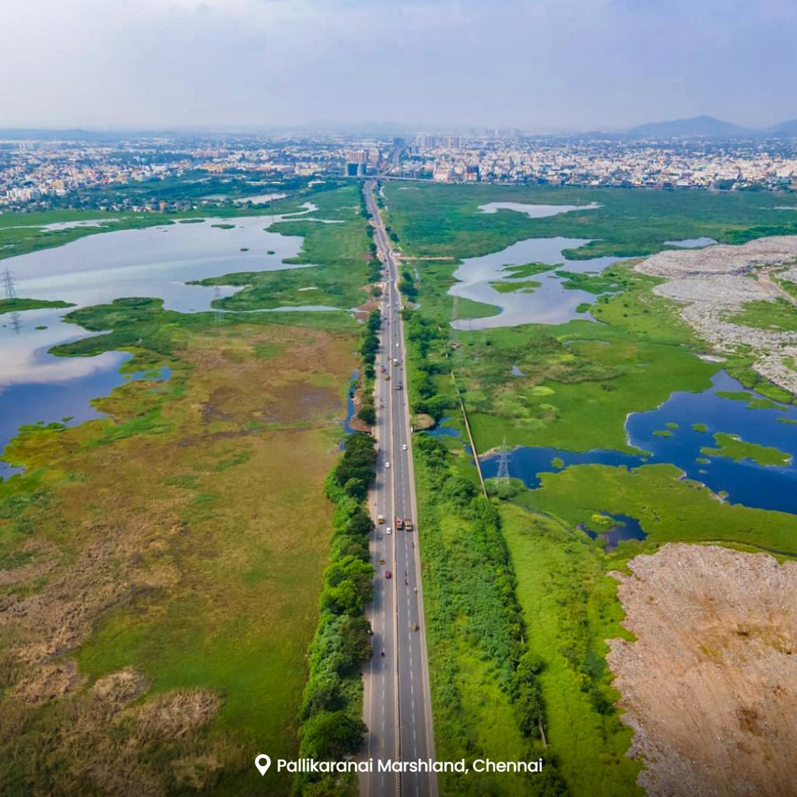
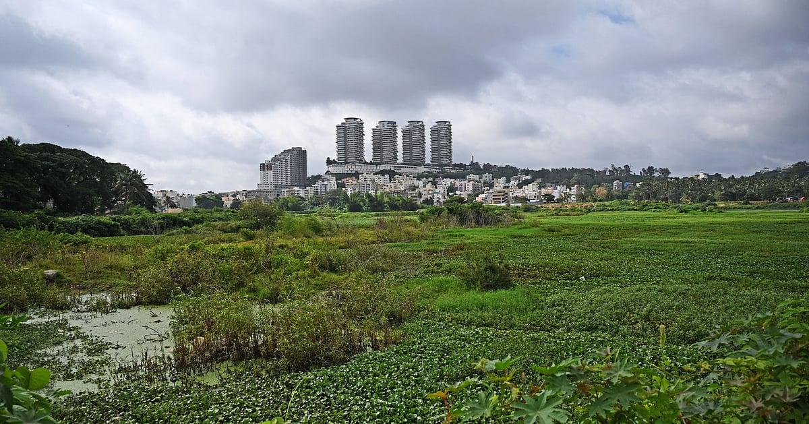
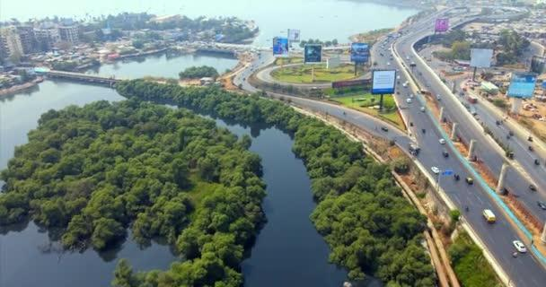
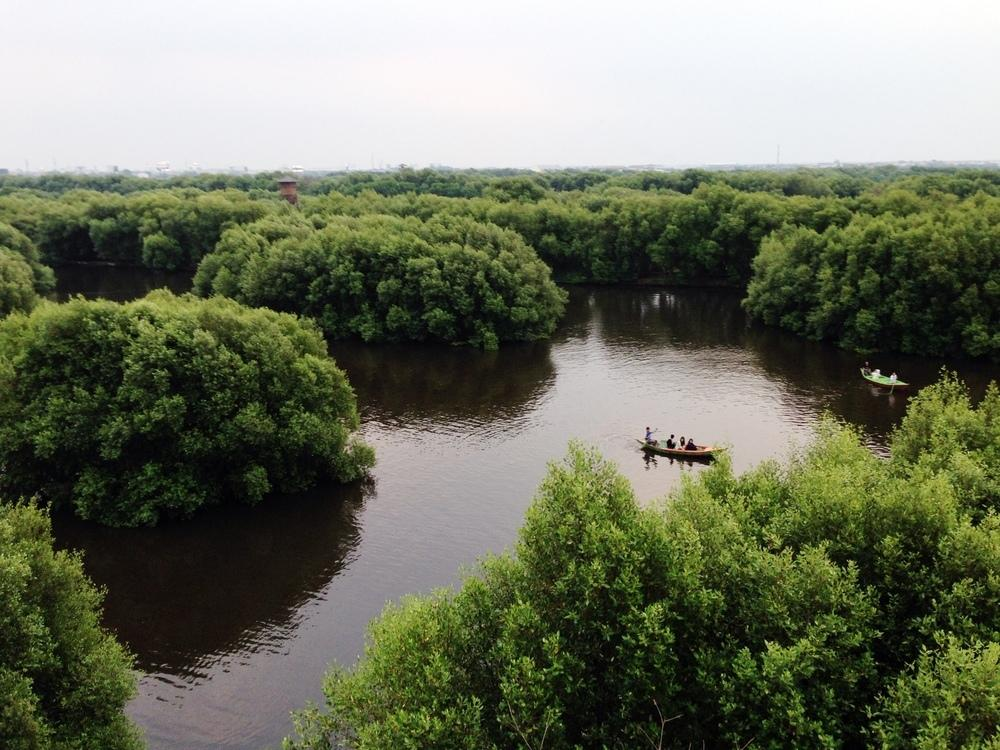
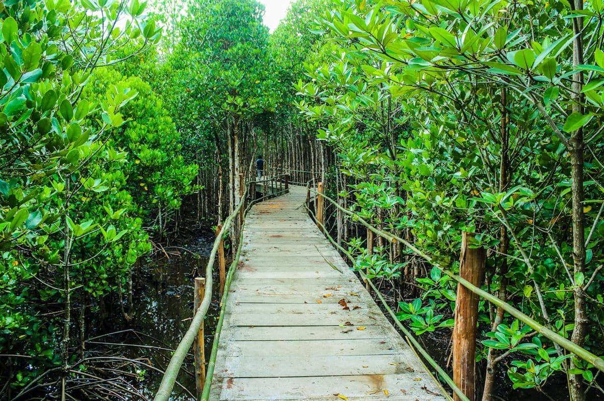

01
Freshwater Marsh
Stores excess rainfall and releases water gradually.
Wetlands may look like ordinary patches of water and vegetation, but they quietly perform one of the most important jobs in a city: absorbing, storing and slowing excess water.
A wetland is an area where water covers the soil, or remains at or near the surface, for all or part of the year.
In cities, wetlands can take many forms — marshes, lakes, ponds, floodplains, mangroves and other water-rich ecosystems.
They are more than just open spaces. They provide valuable ecosystem services, including flood regulation, groundwater recharge, biodiversity support and water purification.
Stores excess rainfall and releases water gradually.
Helps store rainwater and supports groundwater recharge.
Provides space for excess river water during heavy rainfall.
Mangroves and coastal wetlands can reduce wave and storm-surge energy.
It changes how quickly water moves through a city.
Wetlands temporarily store excess water and allow it to move through the landscape more gradually.
When wetlands are replaced by buildings, roads and other hard surfaces, rainfall becomes rapid surface runoff and reaches low-lying areas sooner.
Wetland loss has occurred across different regions and time periods. The exact estimate depends on the baseline year and the method used to measure it.
But the overall direction is clear: wetlands are being lost at a significant scale.
Ramsar Wetlands Extent Index, 1970–2008.
Global Wetland Outlook 2025, since 1970.
Nature global reconstruction, since 1700.
Davidson study, since 1900.
Wetland loss is measured using different datasets, definitions, geographic areas and baseline years. Therefore, these figures should not be interpreted as competing measurements of exactly the same thing.
Wetlands provide natural space where rainfall can temporarily accumulate before water moves onward.
Wetlands provide habitat and food for fish, amphibians, reptiles and resident and migratory birds. The report highlights Pallikaranai Marsh as an example of a highly diverse urban wetland.
Wetlands provide services such as flood mitigation, water regulation and habitat. Converting them can mean losing these recurring ecosystem benefits.
A reminder that the value of wetlands extends far beyond the land they occupy.
*Figure reported in the project report. See the references and original source for methodology and baseline.
Global wetland-loss estimates vary depending on the period, baseline and methodology used.
Ramsar Wetlands Extent Index estimate.
Estimate reported in the Global Wetland Outlook 2025.
Range reported in a Nature study using a longer historical baseline.
Range reported by Davidson using a twentieth-century baseline.
These estimates should not be treated as directly comparable percentages. Differences in definitions, baselines and methods affect the results.
Across Chennai, Bengaluru, Mumbai, Jakarta and Houston, the report identifies a recurring pattern: as natural wetland and water-storage areas disappear, cities can become more exposed to flooding and water-related risks.
Select a city below to explore what happened.

Historical wetland extent in the 1960s compared with about 690 ha of protected Reserve Forest remaining.
The report links the loss of natural storage areas with increased vulnerability during major rainfall events.
The report notes large quantities of waste dumped in and around the wetland system.

The report cites a decline in functioning lakes between 1973 and 2011.
Open-water coverage declined substantially over the same broad period.
A 2023 survey cited in the report found encroachment across part of the combined area of 837 lakes.

The report cites approximately 40% loss of wetland and mangrove cover during the early 1990s–2005 period.
Mumbai received approximately 944 mm of rainfall in 24 hours on 26 July 2005.
The report describes how high tide could restrict drainage outfalls during the extreme rainfall event.

The report estimates that approximately 97% of Jakarta's natural wetlands have been converted.
The report describes a major decline in green and wetland cover since 1965.
The report notes subsidence of up to approximately 25 cm per year in parts of Jakarta.

The report cites approximately 25,000 acres of wetlands lost across the region between 1992 and 2010.
The report estimates substantial lost flood storage associated with wetland loss.
The 2017 hurricane caused extensive flooding and major economic damage across the region.
The five cities use different wetland types, time periods and measurement methods. The figures are therefore presented as individual case-study evidence rather than as directly comparable measurements.
Wetland loss is rarely caused by a single decision. The report identifies several connected pressures that can gradually reduce the space available for water, wildlife and flood protection.
Explore each pressure below.
Wetlands can be converted or encroached upon as cities expand. Roads, buildings and other infrastructure can replace natural water-storage areas.
Solid waste and pollution can degrade wetlands, reduce their ecological value and interfere with their ability to function as healthy water systems.
Changing rainfall patterns, extreme rainfall and other climate-related pressures can increase the stress placed on already degraded urban wetland systems.
In places such as Jakarta, land subsidence can combine with wetland conversion and urbanisation, increasing exposure to flooding.
Many small development decisions can accumulate over time. The combined effect can remove substantial natural flood-storage capacity.
Wetland protection is not only about preserving nature. It can also be part of how cities manage rainfall, flooding, biodiversity and urban growth.
The report highlights several approaches that can help rebuild natural flood buffers.
Cities need to identify wetlands, lakes, floodplains and other natural water-storage areas before they disappear beneath development.
Legal protection only works when wetlands are properly identified, monitored and protected from encroachment and damaging activities.
Restoration can involve improving wetland habitats, reconnecting water systems, removing waste and rebuilding natural areas that can store water.
Urban planning can leave space for water instead of treating every wet area as land available for construction.
Citizen groups and local communities can support monitoring, restoration, awareness and protection of urban wetlands.
The report highlights examples where natural systems and urban infrastructure are being combined to manage water more effectively.
Wuhan implemented hundreds of sponge-city projects across selected areas to increase the city's ability to absorb and manage rainfall.
Terraced wetland systems demonstrate how landscape design can slow, store and filter water while also creating ecological space.
Restoration work around Buffalo Bayou shows how natural landscapes can be incorporated into urban flood-management strategies.
Protecting existing wetlands is generally more effective than waiting until natural flood-storage capacity has already been lost and then trying to rebuild it.
Want to understand the issue in more detail? Read the complete study or watch the video explanation below.
The resources provide additional context behind the facts and case studies presented on this website.
Read the complete report: "Vanishing Urban Wetlands: Are Cities Losing Their Natural Flood Buffers?"
Open Study PDF ↗Watch a visual explanation of urban wetlands, their role in flood protection and the challenges created by wetland loss.
The PDF is the main study used as the reference for the information presented throughout this website.
Share your perspective on vanishing urban wetlands. Your response can help us understand public awareness and the importance of protecting these natural flood buffers.
Having trouble viewing the form? Open the survey in Google Forms
You've explored what wetlands are, how they protect cities, why they are disappearing and what can be done.
Now test what you've learned.
Select an answer for each question and submit the quiz.
Wetlands are often misunderstood. Some common assumptions can make it harder to recognize their importance to cities.
Wetlands provide natural water storage, support biodiversity and can help reduce flood pressure on cities.
The loss of many small water bodies can gradually reduce the amount of natural storage available across an entire city.
Flooding can also be affected by wetland loss, blocked drainage, land conversion and other changes to natural water systems.
Wetland restoration and nature-based urban projects can rebuild some of the natural functions that cities have lost.
Urban wetlands are part of a city's natural infrastructure. Protecting them requires planning, enforcement, restoration and community participation.
Learn where lakes, marshes, floodplains and other wetlands exist in your city.
Avoid dumping waste and support efforts that reduce pollution around water bodies.
Community awareness can help bring attention to encroachment, pollution and wetland loss.
Restoration projects can help rebuild some of the ecological functions that damaged wetlands once provided.
Better planning can allow urban growth while protecting the natural systems that help cities manage water.
WetlandWatch is based on secondary research, published studies, institutional reports and environmental reporting compiled for this project.
“Wetlands: A Global Disappearing Act” factsheet and Global Wetland Outlook 2025.
ramsar.orgGlobal wetland reconstruction study, published in Nature.
NatureLiterature review of global wetland loss, Marine and Freshwater Research.
Marine and Freshwater ResearchIISc CES / B.First, India Water Portal and Deccan Herald reporting on Bengaluru's lakes and encroachment.
IISc CES · India Water Portal · Deccan HeraldWWF India, Citizen Matters, Madras Musings, The Quint and Journal of Forest and Wildlife reporting.
Multiple institutional and journalistic sourcesIndia Water Portal, Eco-Business and Disaster.Shiksha reporting on the 2005 Mumbai floods and mangrove loss.
Multiple environmental sourcesNext City, Mongabay, National Geographic, The Conversation and Science News Explores.
Multiple environmental sourcesTexas A&M / Texas Sea Grant, Capital & Main, Eos / Nature Water and Lincoln Institute of Land Policy.
Multiple research and policy sourcesResources for the Future and Nature Water (2025) research on the economic value of wetland flood mitigation.
RFF · Nature WaterLegal Service India and Vajiram & Ravi summaries of the Wetlands Rules 2017 and Ramsar sites in India.
Indian wetland policy sourcesNPR, Reasons to be Cheerful, Esri and MDPI case studies on nature-based urban water management.
Multiple research and media sourcesWeb sources used in the underlying report were accessed in September 2026. Figures should be verified against original publications before formal academic citation.